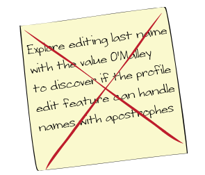
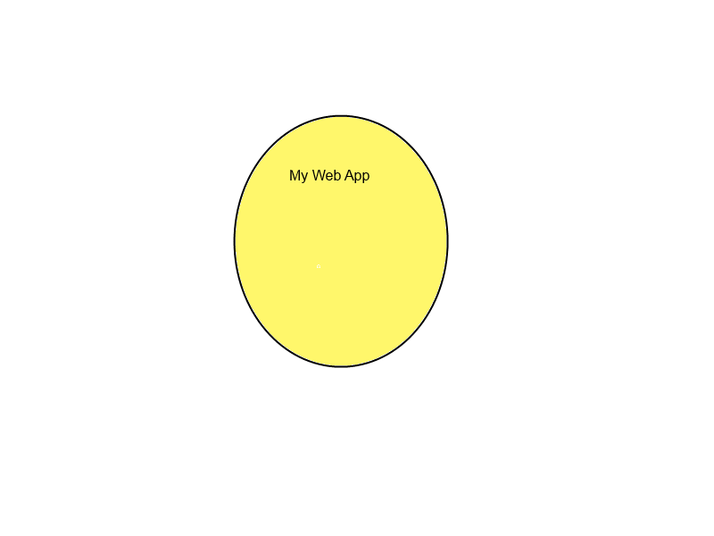
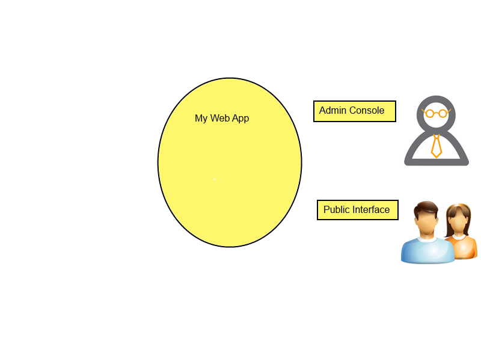
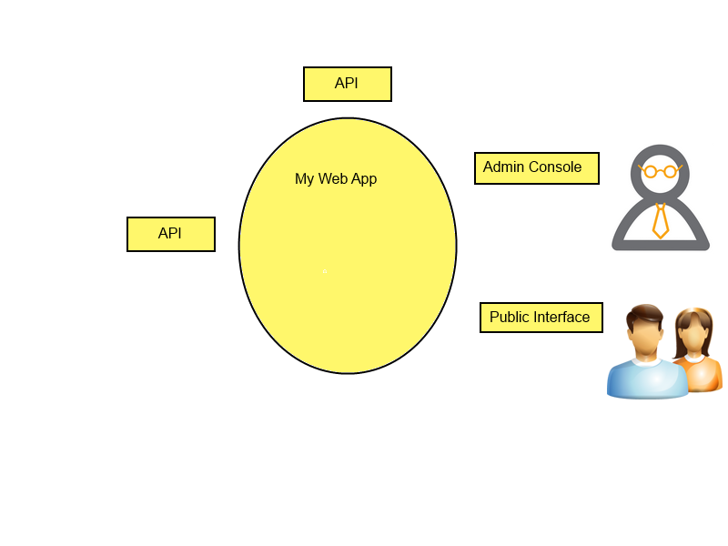
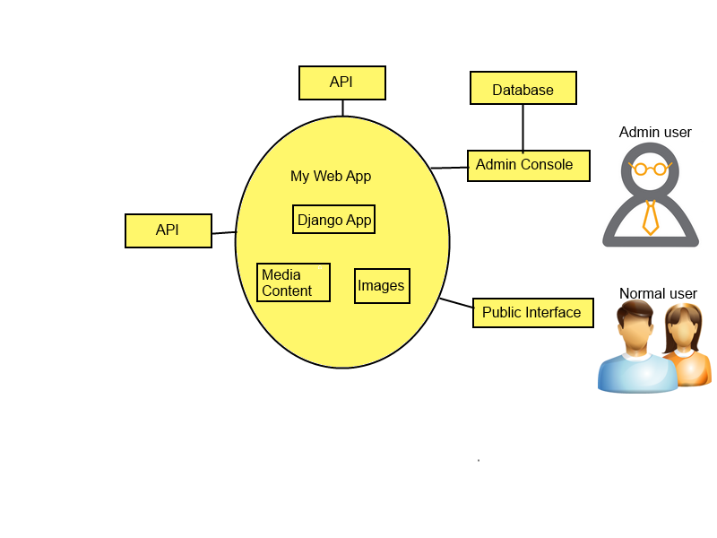

Created by Ramona Suciu
There are two sides of testing: checking and exploring. A comprehensive test strategy involves both approaches.
A style of software testing that emphasizes the personal freedom and responsibility of the individual tester to continually optimize the quality of his/her work...
Cem Kaner
As a strong supporter of the Context Driven Testing School, I had to include here this principle...
There are good practices in context, but there are no best practices!
Answer these:
Use exploratory testing as a means to explore a new territory.
Use charters as your map.
If the map and the territory differ, believe the territory!
A charter template you could use
How would charts look like for a project involving security concerns?
This imaginary product allows the user to update their public profiles with personal information.
These are examples of charts that are either too broad or too specific.
Your web app
Indicate the users of the system
Map external dependencies
Fill in the internals
Gather the team and ask yourselves
... what if ...